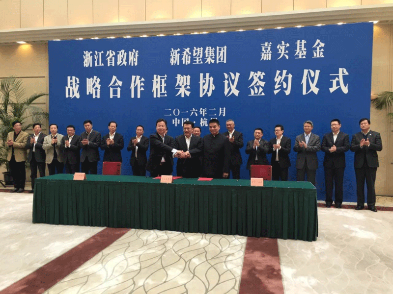

2016.2.29
【舟山专题】新希望集团与浙江省政府、嘉实基金签订战略合作框架协议

2016年2月25日上午，新希望集团与浙江省政府、嘉实基金在杭州签订战略合作框架协议。根据协议，三方将设立舟山农产品食品进出口加工贸易综合保税分区(简称“农产品综合保税区”)、舟山农产品与食品进出口和加工贸易综合保税区基地开发公司(简称“基地开发公司”)、海外农业发展基金。
 根据协议，新希望集团将与舟山市人民政府、嘉实基金共同争取设立舟山农产品食品进出口和加工贸易综合保税分区。此项合作意在打造具有较强竞争力的农产品口岸,形成现代化的中高端农业及食品产业集群。
新希望集团还将与舟山市政府、嘉实基金合作成立舟山农产品与食品进出境和加工贸易综合保税区基地开发公司，负责农产品综合保税区的区域开发和运营服务。
此外，新希望集团还将与浙江省政府、嘉实基金共同设立海外农业发展基金，一期规模30亿人民币，在2016年初成立；其中，浙江省政府出资10亿人民币辅以优惠政策支持海外农业发展基金的设立。海外农业发展基金用于推动中澳现代产业园（舟山）建设，投资具有战略意义的海外农业资产与产业公司等。其中，中澳现代产业园（舟山）项目总投资不低于100亿元，将着力打造高端动物蛋白进境加工园区，大宗粮油中转、加工、储运中心，进口水产品物流、加工、交易中心，积极开展农产品食品进口原料加工与贸易服务。
新希望集团作为国内农业龙头企业，不仅具备农产品生产上的优势，建立起了全产业链的生产模式，还在十余年的国际化拓展过程中具备了整合国际农业、产业、金融资源的能力。浙江是我国开放经济大省，舟山群岛新区是我国首个以海洋经济为主题的国家级新区，2012年成为国务院批复建立的舟山港综合保税区。嘉实基金则是国内最大的基金管理公司之一。
签订协议前，新希望集团董事长刘永好与浙江省省长李强、副省长袁家军、嘉实基金管理有限公司总裁赵学军进行了座谈。李强说，当前浙江正在加快推进经济转型升级，希望通过此次合作加快浙江外向型农业产业化的发展，推进舟山口岸过境食品农产品加工贸易和跨境电子商务发展，积极推动国际间农业合作。刘永好表示，希望运用新希望的资源和经验推动农业产业化和国际资源整合，实现三方的共赢发展。赵学军表示，愿通过努力，推动项目顺利实施、早见成效。
三方的合作有助于在具备海洋港口资源优势、近核心市场区位优势的东南沿海地区建立起具有示范意义的多功能综合性的进出口农产品食品生产加工和物流基地，积极推动国际间农业合作。同时三方的合作也是积极推进“一带一路”和长江经济带国家战略实施的重要举措。
以上内容节选自6月5日央视《对话》栏目。